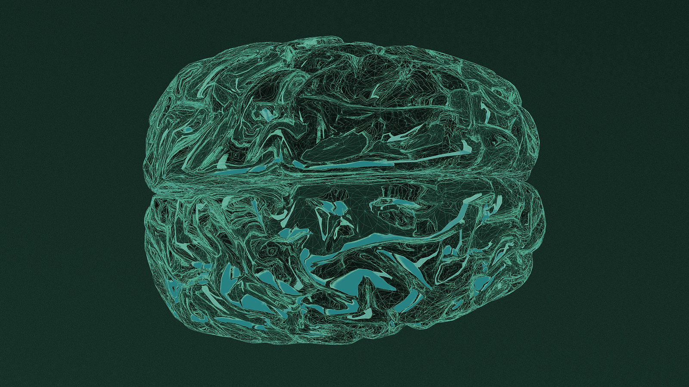

Forskning
Hva skjer i kroppen når hjernen går i theta-tilstand?

Ny forskning avslører de omfattende helsefordelene som oppstår når hjernen beveger seg inn i de dype, helbredende theta-bølgene.
Kroppens skjulte helbredende kraft
Har du noen gang opplevd den dype roen som kan komme under meditasjon, massasje eller andre avslappende behandlinger? Det du kanskje ikke visste, er at hjernen din i disse øyeblikkene produserer spesielle elektriske bølger som utløser en kaskade av helbredende prosesser i hele kroppen.
Hjernebølger: kroppens elektriske symfoni
Hjernen produserer konstant elektriske impulser som kan måles som hjernebølger. Bølgene opererer på forskjellige frekvenser, målt i hertz (Hz), og hver type er forbundet med spesifikke mentale tilstander og fysiologiske effekter.
- Delta (0,5–4 Hz): de langsomste bølgene, under dyp søvn uten drømmer
- Theta (4–8 Hz): kreativitet, dagdrømming, redusert angst og dyp avslapning
- Alfa (8–12 Hz): rolig våkenhet og meditasjon
- Beta (12–38 Hz): normale våkne tilstander med bevisst tenkning
- Gamma (35–100 Hz): de raskeste bølgene, høy mental prosessering
Theta-bølger: porten til dyp helbredelse
Theta-bølger oppstår naturlig når vi sover og drømmer, men også når vi er våkne i en meget dyp avslapningstilstand. Denne frekvensen kan også åpne for kontakt med følelser man kanskje undertrykker.
Forskningsbaserte fordeler
Kreativitet og intuisjon. Theta-aktivitet reflekterer en nyttig «reparasjonsmodus», og er observert i spesifikke mønstre på tvers av hjernen under meditative tilstander og kreativt uttrykk.
Læring og hukommelse. Theta-bølger er viktige for prosessering av informasjon og for å danne minner. En studie fra 2017 viste at theta-oscillasjoner økte når deltakerne beveget seg i et ukjent miljø, og økte ytterligere når de beveget seg raskere.
Emosjonell regulering. Theta-mønstre kan tilrettelegge for avslapning på et dypere nivå enn det som ellers er tilgjengelig. Stress, angst og frykt for usikkerhet kan avta, mens intuitiv kapasitet kan øke.
Avhengighetsbehandling. Økt theta i midtre frontallapp bidrar til å forklare hvordan mindfulness-trening kan motvirke avhengighet og støtte bedring.
Avslapningsresponsen: kroppens naturlige helbredelsessystem
Avslapningsresponsen er en fysisk tilstand av dyp hvile som engasjerer det parasympatiske nervesystemet – kroppens «hvile og fordøy»-system. Under denne tilstanden senkes blodtrykket, hjerterytmen og pusten blir roligere, fordøyelsen normaliseres og hormonnivåene returnerer til normale verdier.
Stresshormoner og deres motgift
Forhøyede cortisol-nivåer skaper fysiologiske endringer som bidrar til oppbygging av fettvev og vektøkning – blant annet fordi cortisol øker appetitten. Studier på mindfulness og pusteteknikker viser at avslapningsteknikker kan bidra til å redusere cortisol-nivåene.
Det parasympatiske nervesystemet: kroppens brems
Nyere nevrovitenskapelig forskning antyder at regelmessig meditasjonspraksis – i det minste delvis – kan reversere ubalansen mellom det sympatiske og det parasympatiske systemet.
Hjertefrekvensvariabilitet (HRV) er et mål på sympatisk og parasympatisk funksjon, vurdert ved nøye måling av slag-til-slag-variasjoner i hjertet. Meditatorer viser HRV-endringer over tid som indikerer større parasympatisk aktivitet og lavere sympatisk aktivitet.
Det sympatiske og det parasympatiske nervesystemet er like viktige for sunn nervesystemfunksjon. De arbeider sammen for å opprettholde homeostase. Problemer oppstår når systemene handler ut av balanse.
Dokumenterte helsefordeler av dyp avslapning
Kardiovaskulært. Harvard Medical School gjennomførte en dobbeltblind, randomisert kontrollert studie av 122 pasienter med hypertensjon, 55 år og eldre. Etter åtte uker hadde 34 av dem som praktiserte avslapningsresponsen oppnådd en systolisk blodtrykkreduksjon på mer enn 5 mm Hg.
Mental helse. Meditasjon er assosiert med forbedringer i mange viktige helsetilstander – inkludert depresjon, posttraumatisk stress, hypertensjon og andre kardiovaskulære sykdommer.
Inflammasjon og immunsystem. Det ser også ut til å utløse gunstige endringer i biologiske prosesser som inflammasjon, immunsystemfunksjon og cellulær aldring.
Praktiske metoder for å oppnå theta-tilstanden
- Dyp pust-meditasjon. Fokus på dype, avslappede pust kan slå av det sympatiske og slå på det parasympatiske nervesystemet.
- Progressiv muskelavslapning. Vist å være mer effektiv enn dyp pusting alene for å fremme fysiologisk avslapning.
- Guidet imagery. Forstyrrende minner erstattes med positive mentale bilder; forskning støtter effekten på stress og angst.
- Kroppsscanning. Blander fokus med progressiv, målrettet avslapning av kroppens deler.
- Binaurale beats. Hjernen tilpasser seg to konkurrerende frekvenser og oppfatter en tone skapt av differansen mellom dem.
Individuell variasjon
Meditasjon er et komplekst fenomen som kan fremkalle både parasympatisk og sympatisk aktivering – hypoaktivering og hyperaktivering – avhengig av dose, ekspertise og individuelle faktorer. En studie fant at 12 av 57 nybegynnere (21 %) opplevde bivirkninger som kvalme, noe som understreker viktigheten av gradvis progresjon og individuell tilpasning.
Langsiktige endringer: nevroplastisitet i aksjon
Avslapningsresponsen kan endre kroppen på molekylært nivå: den kan påvirke hvilke gener som aktiveres, og bidra til å slå på gener som lar kroppen bruke energi mer effektivt – og redusere cellulær aldring.
Regelmessigheten i praksisen ser ut til å være viktigere enn hvilken type meditasjon som praktiseres. Forskning viser også at nervesystemfordelene er overlegne standard avslapning, og at de styrkes med praksis.
Kraniosakralterapi som theta-fasilitator
Kraniosakralterapi, med sine utrolig lette berøringer og fokus på kroppens naturlige rytmer, kan være særlig effektiv for å legge til rette for dyp hvile og theta-tilstander under behandling. De skånsomme, tilstedeværende berøringene kan naturlig støtte aktivering av det parasympatiske nervesystemet.
Når klienter opplever theta-tilstander under behandling, skapes optimale betingelser for kroppens naturlige helbredelsesprosesser. Den dype avslapningen kan bidra til:
- reduksjon av stresshormoner som cortisol
- aktivering av det parasympatiske nervesystemet
- økt produksjon av theta-bølger med tilhørende kreativitet og emosjonell regulering
- forbedret immunfunksjon og redusert inflammasjon
For kraniosakralterapeuter gir denne forskningen en solid vitenskapelig basis for å forstå hvorfor behandlingene kan være så kraftfulle. Det handler ikke bare om å «slappe av» – det handler om å aktivere kroppens mest fundamentale helbredelsesmekanismer gjennom skånsom, bevisst berøring.
Konklusjon
Forskningen bekrefter det mange har opplevd intuitivt: dype avslapningstilstander har kraftige helbredende effekter. Når hjernen går inn i theta-tilstanden og det parasympatiske nervesystemet aktiveres, skjer en omfattende omstart av kroppens systemer.
- Theta-bølger fremmer kreativitet, læring og emosjonell regulering
- Avslapningsresponsen reduserer stresshormoner og inflammasjon
- Parasympatisk aktivering normaliserer blodtrykk, hjerterytme og fordøyelse
- Regelmessig praksis skaper langsiktige positive endringer i hjernen
- Effektene er målbare og reproduserbare i kontrollerte studier
Forskning tyder på at bare 10–20 minutter daglig med dype avslapningsteknikker kan gi målbare helsefordeler.
Referanser
- NeuroHealth Associates (2024). «The Science of Brainwaves – the Language of the Brain.» Les kilden ↗
- Abhang, P.A., Gawali, B.W., Mehrotra, S.C. (2016). «Brain Waves – an overview.» ScienceDirect. Les kilden ↗
- Healthline (2020). «Theta Brain Waves: Frequency, Sleep, Binaural Beats, and More.» Les kilden ↗
- Hillier, S. (2025). «Alpha, beta, theta: what are brain states and brain waves?» The Conversation. Les kilden ↗
- Zhang, H., Jacobs, J. (2015). «Traveling Theta Waves in the Human Hippocampus.» PMC. Les kilden ↗
- Harvard Health Publishing (2024). «Understanding the stress response.» Les kilden ↗
- Toussaint, L., et al. (2021). «Effectiveness of Progressive Muscle Relaxation, Deep Breathing, and Guided Imagery.» Evidence-Based Complementary and Alternative Medicine. Les kilden ↗
- PMC (2020). «Effect of meditation on autonomic function in healthy individuals: A longitudinal study.» Les kilden ↗
- PMC (2024). «Short-term meditation training alters brain activity and sympathetic responses at rest.» Les kilden ↗
- Springer (2024). «Adverse Effects of Meditation.» Journal of Religion and Health. Les kilden ↗
Vil du kjenne dette i kroppen i stedet for å lese om det? Timene er 80 minutter.
Book time ↗